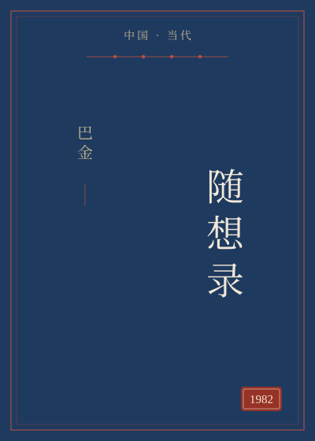
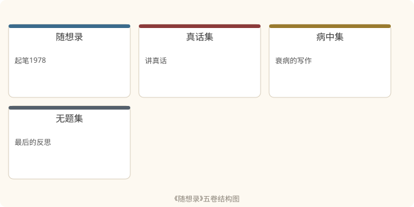

随想录
一、基本信息
| 作者 | 巴金 |
|---|---|
| 成书/出版 | 1978—1986年（作者页 B079 口径：随想录（1978—86）） Ba Jin — Encyclopaedia Britannica（百科全书） |
| 国别/地区 | 中国 |
| 时代 | 现当代 · 当代 |
| 体裁 | 散文集 |
| 语言 | 汉语（白话） |

《随想录》五卷结构图（主题·结构图）
二、创作背景
作者页（B079）：巴金 major_works 载'随想录（1978—86）'（B079 作者页定位，详见 jia 条核对）。
意义（通说待核）：晚年巴金的自我清算——'讲真话'与反思'文革'的散文总集。
三、内容脉络
五卷：《随想录》《探索集》《真话集》《病中集》《无题集》（卷名通说待核）。
《怀念萧珊》：悼亡妻之文（通说待核）。
四、主要人物表
| 人物 | 身份 | 说明 |
|---|---|---|
| 巴金 | 散文作者 | 讲真话的老人 |
五、主题与艺术特点
- 讲真话（通说待核——其核心口号）。
- 反思'文革'的忏悔（通说）。
- '生命的开花'（通说待核）。
六、影响与评论
- 作者页：巴金晚年散文总集（B079 作者页口径）。
Ba Jin — Encyclopaedia Britannica（百科全书） - 新时期散文的精神标杆（通说待核）。
Ba Jin — Encyclopaedia Britannica（百科全书）
七、阅读建议
难点
- '文革'记忆的沉重。
- 平淡文体的力量。
- 《随想录》（人民文学出版社/三联书店版本，通说待核）。
先《家》后本作：巴金的两端。
八、待核实
- 五卷卷名核对。
- 《怀念萧珊》篇核对。
- '讲真话的大书'评价出处待核。
本页主要来源
巴金的其他收录作品：家